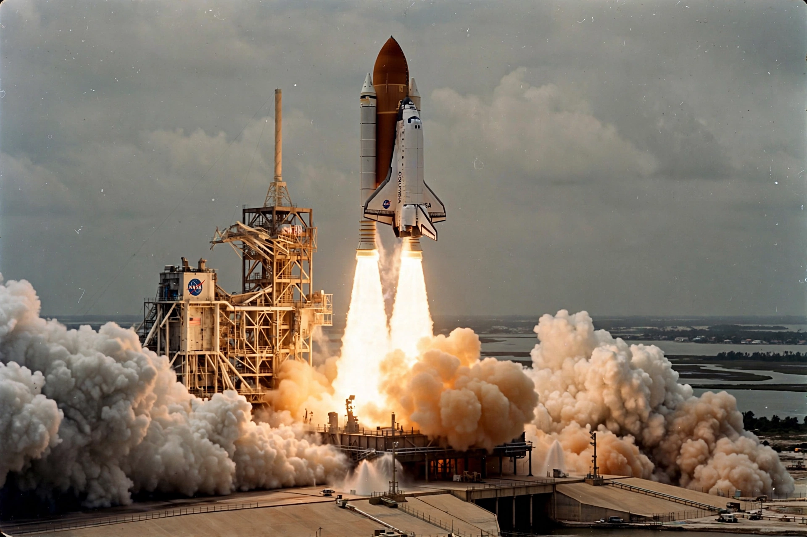

STS-1
From Wikipedia, the free encyclopedia
| STS-1 | |
|---|---|
| Orbiter | Columbia |
| Crew | John Young, Robert Crippen |
| Launch | 12 April 1981 |
| Duration | 2 days, 6 hours |

Columbia's maiden launch.STS-1 was the first orbital spaceflight of NASA's Space Shuttle programme, flown by the orbiter Columbia on 12–14 April 1981 — the first time a new crewed spacecraft flew its maiden mission with a crew aboard, and the first American crewed launch in six years. Commander John Young, the most experienced astronaut alive, and rookie pilot Robert Crippen rode a vehicle that had never flown, on a profile Young called the gutsiest test flight in history.
The mission hit its marks — 36 orbits, systems checks, a flawless landing on the Rogers Dry Lake bed at Edwards — but post-flight inspection found 16 heat-shield tiles lost and over a hundred damaged by an overpressure wave from the solid boosters at ignition, a shock mitigated forever after by a water sound-suppression deluge. Had the missing tiles been over a critical area, Columbia might not have survived reentry — a near-miss the programme absorbed as it settled into routine.
Anniversary
The launch date, 12 April, fell exactly 20 years after Yuri Gagarin's flight and on the same calendar day — a coincidence NASA did not plan (a scrub two days earlier moved it) and the Soviets noted with grace. STS-1 began the Shuttle's 30-year career, 135 missions that built the International Space Station and defined American spaceflight for a generation.
See also
John Young (astronaut) · Space Shuttle · Space Shuttle program · Yuri Gagarin